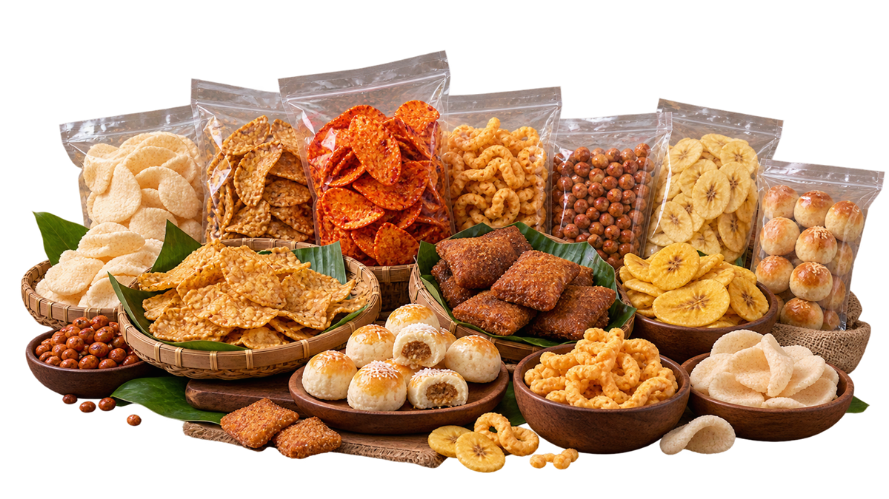
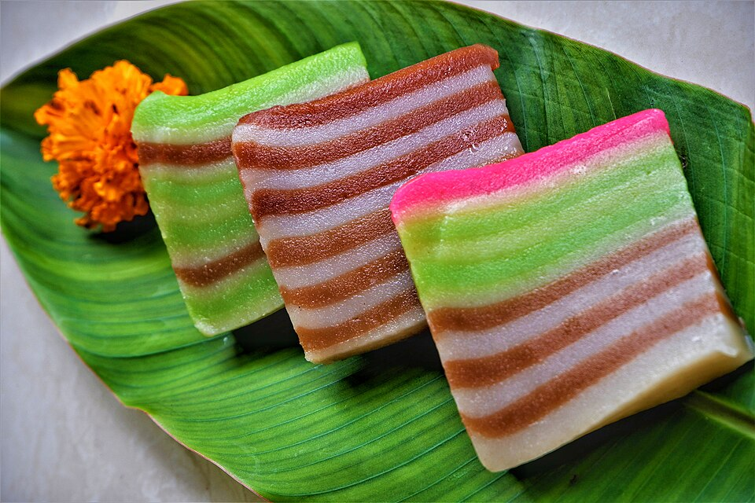

Camilan khas Purwokerto & Banyumas
Rasa Nusantara
Lebih Dekat
di Mirama.
Menyediakan berbagai makanan khas daerah, camilan tradisional, produk lokal berkualitas, dan kebutuhan harian untuk keluarga Anda.

getuk & lainnya
Jelajahi pilihan
Kategori Produk
Temukan camilan dan kebutuhan yang cocok untuk setiap momen.
Pilihan favorit
Produk Unggulan
Pilihan camilan, makanan siap santap, dan rasa khas daerah.
Harga dan ketersediaan pada katalog demo merupakan contoh dan perlu dikonfirmasi dengan pihak Mirama Food Mart.

Rasa lokalpilihan hati
Tentang Mirama
Lebih dari Sekadar Toko,
Teman Belanja Keluarga.
Mirama Food Mart hadir untuk membantu keluarga menemukan makanan khas daerah, camilan tradisional, produk lokal, dan kebutuhan harian dalam satu tempat.
Kami percaya rasa yang akrab, pilihan yang beragam, dan pelayanan yang ramah membuat setiap kunjungan terasa lebih dekat.
Kenali Mirama →Kurasi pilihanRagam produk untuk berbagai kebutuhan.
Rasa NusantaraMenghadirkan cita rasa dari berbagai daerah.
Ramah keluargaBelanja kebutuhan dengan lebih praktis.
Temukan kami
Kunjungi Mirama Food Mart
Jl. Sedap Malam No. B182, Taman Galaksi Indah,
Bekasi Selatan, Jawa Barat.
Cerita pelanggan
Rasa Nyaman, Pilihan Beragam.
Lihat profil dan ulasan terbaru →Butuh informasi produk?
Tanya langsung ke Mirama.
Konfirmasi stok, harga, dan pilihan produk sebelum berkunjung.